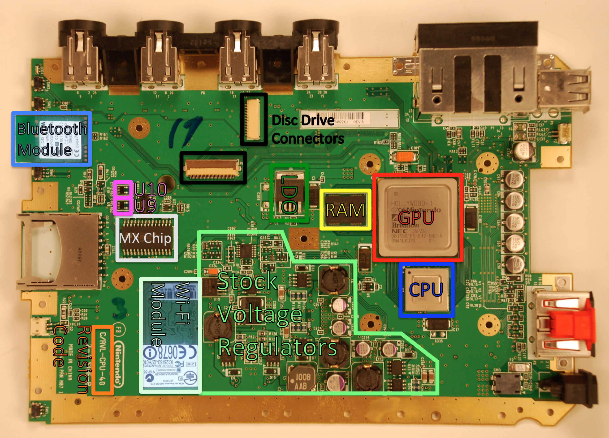
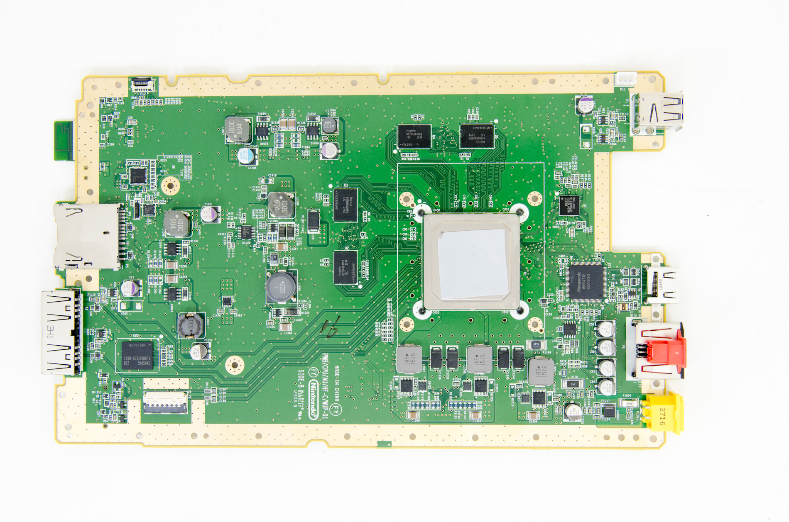
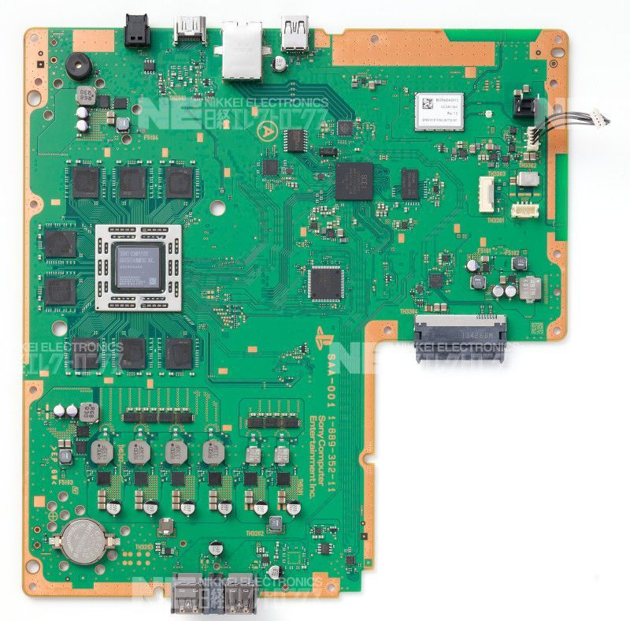
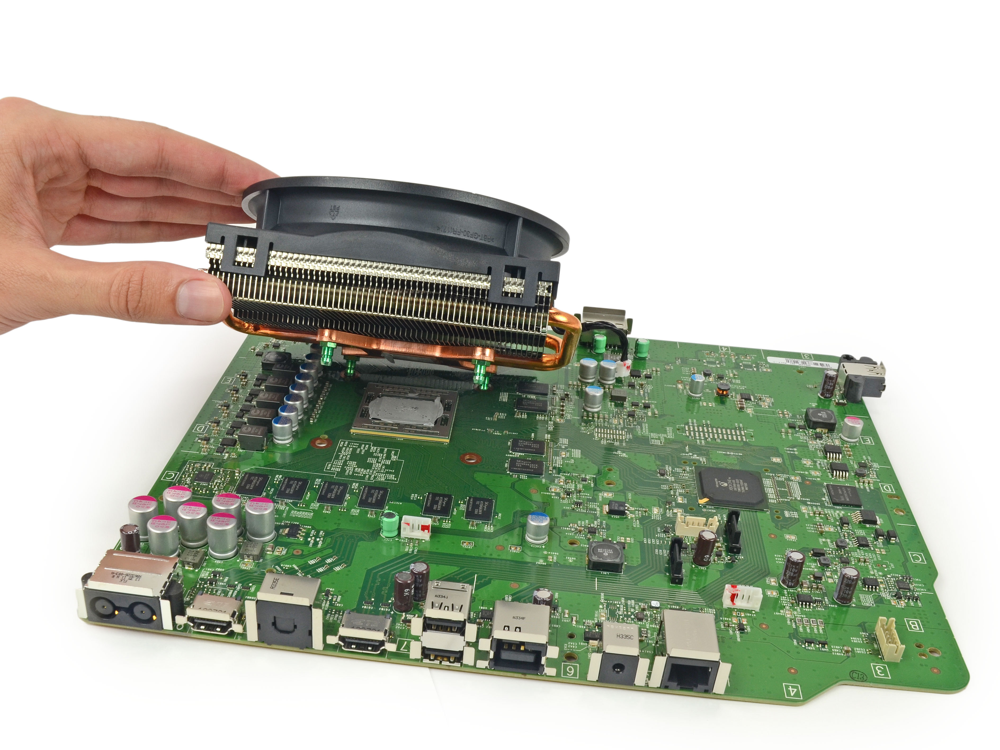
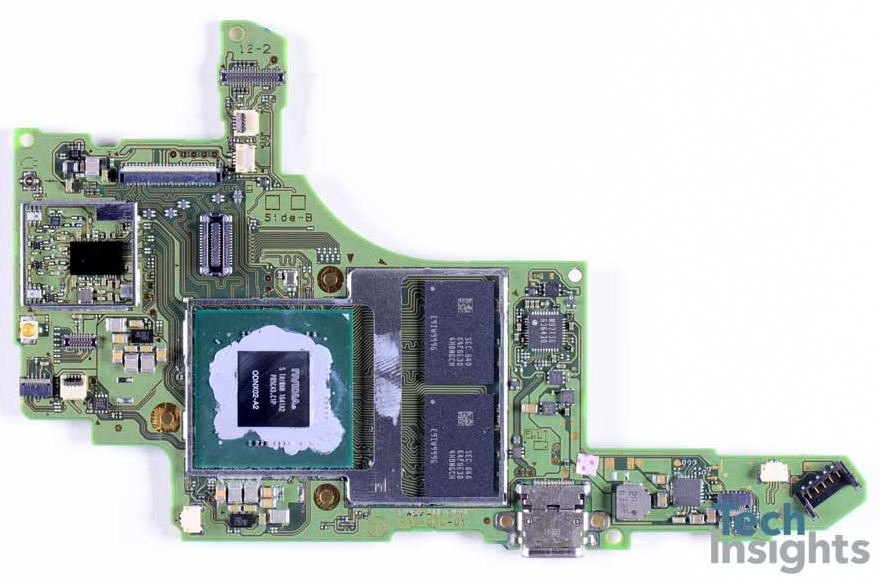
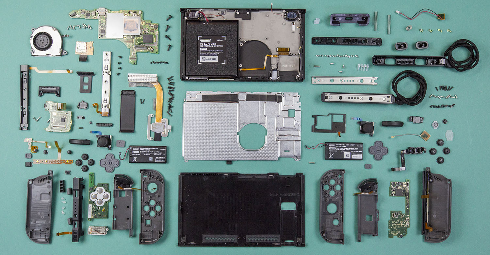

I have taken apart many devices mostly electronics like video game consols but I have taken apart other gadgets too when necessary, I have found disassembling things very enjoyable my whole life and my parents can tell you it was not so cute when I was 5 but admit that its very conveniant that they can usually hand me something broken and expect it back fixed in most cases.
My favorite things to disassemble would have to be the video game consoles, I just love looking at the processors and such and the whole process is like one big "puzzle" when you go to put everything back.
You could say its a hobby for me, but its not something I can do with just anything unfortunately, The reason being that I have devices that I cannot risk breaking or voiding warrenty, these being: My smart phone, and my Nintendo Switch, with my smart phone its a given but the Switch is for both reasons, I have lots of game saves and stuff on it and don't feel like voiding my warrenty, but I do plan on disassembling my system or a broken system at some point.
I have recently been disassembling things less for the experience but to actually maintenance the device, my brother bought two Playstation 3 the original ones that can play PS1 PS2 and of course PS3 games, the reason I took them apart was to clean them and re-apply new thermal paste onto the processors. I have done the same thing for several Wii's, and Wii U's.
I have also taken apart multiple controllers such as the Xbox original controllers,(Even the Duke!) the ps3 controller, the Nintendo switch Pro Controller and Joy-cons, and the Nintendo switch dock.
I have built a total of 4 computers at home and upgraded a few more. I am always fascinated by what makes things tick, and I plan on turning this "Hobby" into a full blown job by going into electronics repair which will include mobile devices!
Recently I had to replace some parts of one of my Nintendo Switch Joy-con controllers, I had to take one apart and replace the joystick and the board on the rail side that displays the controller number and has the br and bl buttons as well as the sync button, it was a great experience and I really anjoyed doing it!
I also took one of my gamecube controllers and modified it so that the analog triggers on the back only register the full press, and paired that with a 3d printed piece that makes the triggers click instantly rather than needing to be pressed in all the way, how I achieved this was by soldering the connection from the full press button to the analog so that it completes the circut on the analog side making the game think the analog trigger is being pulled down fully when the button is pressed. This makes doing certain moves that use those triggers in the game Super Smash Bros Ultimate easier to do.
Checkout all these logic boards from various current generation video game consols and consols I have disassembled before.
 Wii Logic Board
 Wii U Logic Board
 PS4 Logic Board
 Xbox One S Logic Board
 Nintendo Switch Logic Board
 Swtich full teardown
This is the Nintendo Switch in all its pieces, most people see a mess of parts, but all I see is a puzzle waiting to be completed.